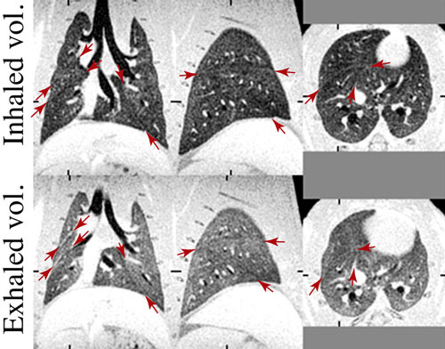

ABQMR's lung imaging effort began with imaging inert fluorinated gases (rather like gaseous Teflon) at their thermal equilibrium magnetization as an alternative to the more complex and expensive methods of imaging "hyperpolarized noble gases" in lungs.
Inert fluorinated gases lend themselves to making images whose pixel brightness is directly proportional to the amount of fluorinated gas and we developed methods for rapid quantitative measurements of ventilation (the volume of lungs as a function of time for any given breathing pattern) and quantitative measurement of the ventilation-perfusion ratio, which is a measure of how well any portion of the lung exchanges gases.
Acquiring MRI images of lungs is challenging due to the many solid, liquid, and gas interfaces. The NMR signal from the gases we imaged in lungs decays too rapidly for conventional MRI and required a novel combination of data acquisition and processing to make efficient use of the signal. The ability to image lungs has important applications in medicine as MRI can be used repeatedly to monitor patients with critical lung diseases whereas a technique like X-Ray CT is limited to infrequent use because of ionizing radiation.
The images shown here are coronal, sagittal and axial views of healthy rat lungs at two different volumes. The arrows point to boundaries of lung lobes. These are MRI images, though with quality comparable to CT. Note that the ribs are grey with MRI where they would be expected to be white with X-ray CT.
In addition to acquiring some of the highest resolution MR images of rat lungs, detailed study of the NMR relaxation of these gases, alone and in mixtures, lead to new ways to measure pore size in nanoporous materials.
D. O. Kuethe, J. M. Hix, L. E. Fredenburgh. 2019 T1, T1 contrast, and Ernst‐angle images of four rat‐lung pathologies. Magnetic Resonance in Medicine. 81(4):2489-2500.
D. O. Kuethe, P. T. Filipczak, J. M. Hix, A. P. Gigliotti, R. S. J. Estépar, G. R. Washko, R. M. Baron, L. E. Fredenburgh. 2016 Magnetic resonance imaging provides sensitive assessment of experimental ventilator-induced lung injury. American Journal of Physiology Lung Cellular and Molecular Physiology. 311:L208-L218.
N. L. Adolphi, D. O. Kuethe. 2008 Quantitative mapping of ventilation-perfusion ratios in lungs by 19F MR imaging of T1 of inert fluorinated gases Magnetic Resonance in Medicine. 59:237-246.
D. O. Kuethe, N. L. Adolphi, E. Fukushima, 2007 Short data-acquisition times improve projection images of lung tissue. Magnetic Resonance in Medicine. 57:1058-1064.
D. O. Kuethe, R. Montaño, T. Pietraß. 2007 Measuring nanopore size from the spin–lattice relaxation of CF4 gas. Journal of Magnetic Resonance. 186(2):243–251.
D. O. Kuethe, M. D. Scholz, P. Fantazzini. 2007 Imaging inert fluorinated gases in cracks: perhaps in David's ankles. Magnetic Resonance Imaging 25:505-508.
D. O. Kuethe, M. D. Scholz. 2007 Imaging cracks in marble with magnetic resonance imaging of inert fluorinated gases. Applied Magnetic Resonance. 32:3-12.
S. D. Beyea, D. O. Kuethe, A. McDowell, A. Caprihan S. J. Glass 2005 Porous Materials, in NMR Imaging in Chemical Engineering (eds: Siegfried Stapf and Song-I. Han), Wiley-VCH Verlag GmbH & Co. KGaA, Weinheim, FRG.
D. O. Kuethe, T. Pietraß and V. C. Behr. 2005 Inert fluorinated gas T1 calculator. Journal of Magnetic Resonance. 177:212-220.
S. D. Beyea, S. L. Codd, D. O. Kuethe, E. Fukushima. 2003. Studies of porous media by thermally polarized gas NMR: current status. Magnetic Resonance Imaging. 21(3-4):201-205.
D. O. Kuethe, V. C. Behr, S. Begay. 2002. Volume of rat lungs measured throughout the respiratory cycle using 19F NMR of the inert gas SF6. Magnetic Resonance in Medicine. 48(3):547-549.
A. Caprihan, F. M. Clewett, D. O. Kuethe, E. Fukushima, S. J. Glass. 2001 Characterization of partially sintered ceramic powder compacts using fluorinated gas NMR imaging. Magnetic Resonance Imaging. 19:311-317.
D. O. Kuethe, A. Caprihan, H. M. Gach, I. J. Lowe, E. Fukushima. 2000 Imaging obstructed ventilation with NMR using inert fluorinated gases. Journal of Applied Physiology. 88:2279-2286.
D. O. Kuethe, A. Caprihan, I. J. Lowe, D. P. Madio, H. M. Gach. 1999. Transforming NMR data despite missing points. Journal of Magnetic Resonance. 139(1):18-25.
D. O. Kuethe, A. Caprihan, E. Fukushima, and R. A. Waggoner. 1998. Imaging lungs using inert fluorinated gases. Magnetic Resonance in Medicine. 39(1):85-88.